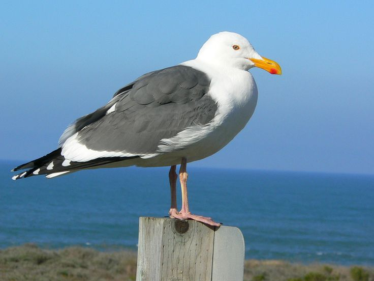

Utah
Mountains, high plateaus and deserts form most of Utah’s landscape. At Four Corners, in the southeast, Utah meets
Colorado, New Mexico and Arizona at right angles, the only such meeting of states in the country. Utah became the 45th
member of the union on Jan. 4, 1896, with Salt Lake City as its capital. Utah is known for having some of the best
skiing in the country, and the mountains near Salt Lake City receive an average of 500 inches of snow per year. During
the 19th century many Mormons settled in Utah, and today approximately 60 percent of the state’s residents are members
of the church. The Sundance Film Festival, one of the premier independent film festivals in the world, is held each
January in Park City.
| Date of Statehood |
Capital |
Population |
Size |
| January 4, 1896 |
Salt Lake City |
3.27 million |
84,899 square miles |
Motto
Industry
Bird
California Seagull

Interesting facts
-
Although annual precipitation averages less than 5 inches within the Great Salt Lake Desert, the northern Wasatch
Mountains receive more than 60. During the drought of 1976-1977, communities were forced to ration water as the state
suffered from its driest period on record with only 7.7 inches of precipitation.
-
On May 10, 1869, the first transcontinental railroad was completed when the Union and Central Pacific Railroads joined
rails at Promontory Summit in Utah Territory. A tie made of California laurelwood bearing a silver plaque with the
railroad’s completion date and four precious metal spikes were presented during the Golden Spike Ceremony; however, an
ordinary tie and iron spikes were used to unite the rail lines.
-
In the summer of 1848, flocks of seagulls came to Mormon pioneers’ rescue by gorging themselves on the crickets that
were destroying their newly planted crops. To honor the “miracle,” the Church of Jesus Christ of Latter-day Saints
dedicated the Seagull Monument, located on Temple Square, in 1913. In 1955, the California Seagull was designated the
state bird.
-
Arches National Park in southeastern Utah contains over 2,000 natural rock arches. The widest, known as Landscape Arch,
extends 306 feet from one base to the other.